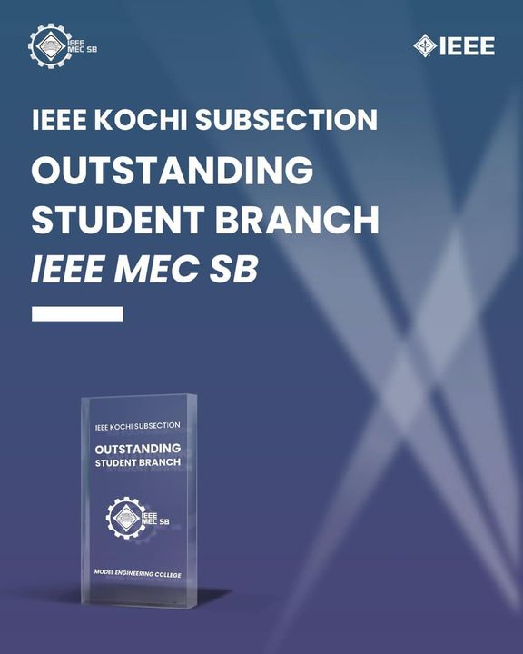

About Us

The IEEE MEC Student Branch is a platform for the students, to be part of IEEE, the world's largest professional organization for technological innovation, and hone their technical and networking skills. With 200+ dedicated student members and 5 professional members, IEEE MEC SB stands out as one of the best student branches in the Kochi Hub.
The SB aims to promote interest among its members, in the cutting-edge technologies, along with providing them myriad chances to volunteer for various events of IEEE and get promoted to the hub and state levels. It has has hosted a gamut of events both at the SB level and Hub level - Minerva, Empneo and Silhouette, to name a few.
IEEE WiE - Women In Engineering, at MEC, works for the upbringing of girls and women in the field of science and technology and has done a commendable job in the hub for organizing events to train girls with necessary skills.
A society entirely devoted to the latest developments in Computer Science and Software Fields for IEEE members, the CS Society, focuses on training students on programming languages, web development and other softwares. It has successfully hosted the React JS workshop and Adobe Illustrator workshop. EMBS, the Engineering in Medicine and Biology Society, recently inaugurated at MEC, supervises and coordinates activities pertaining to the field of Electronics and Biomedical exclusively.